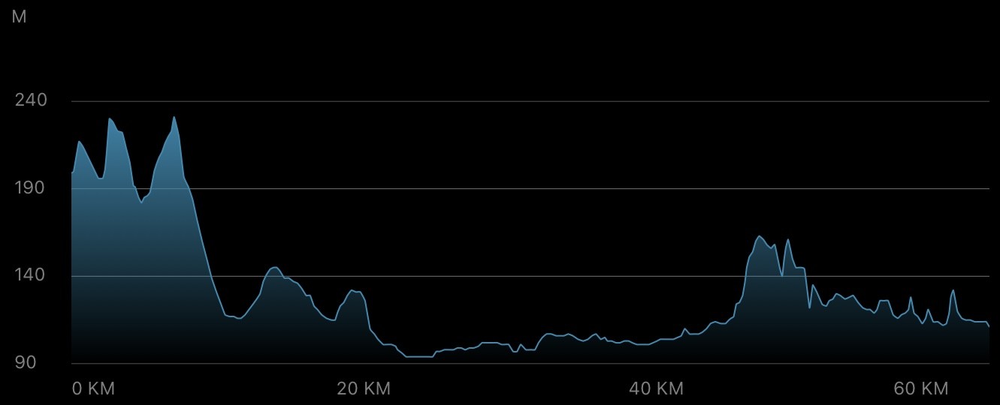
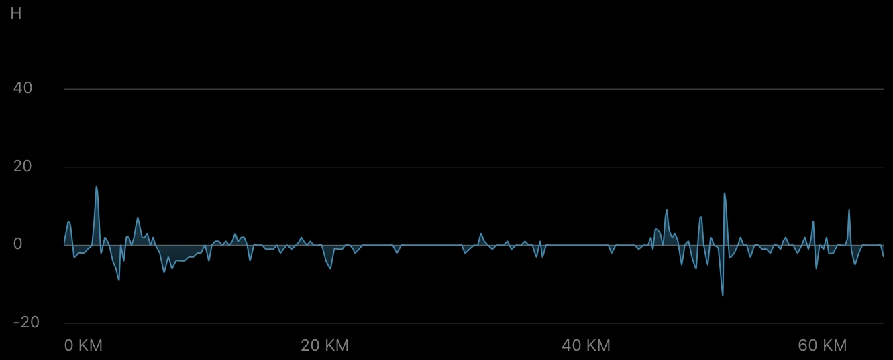
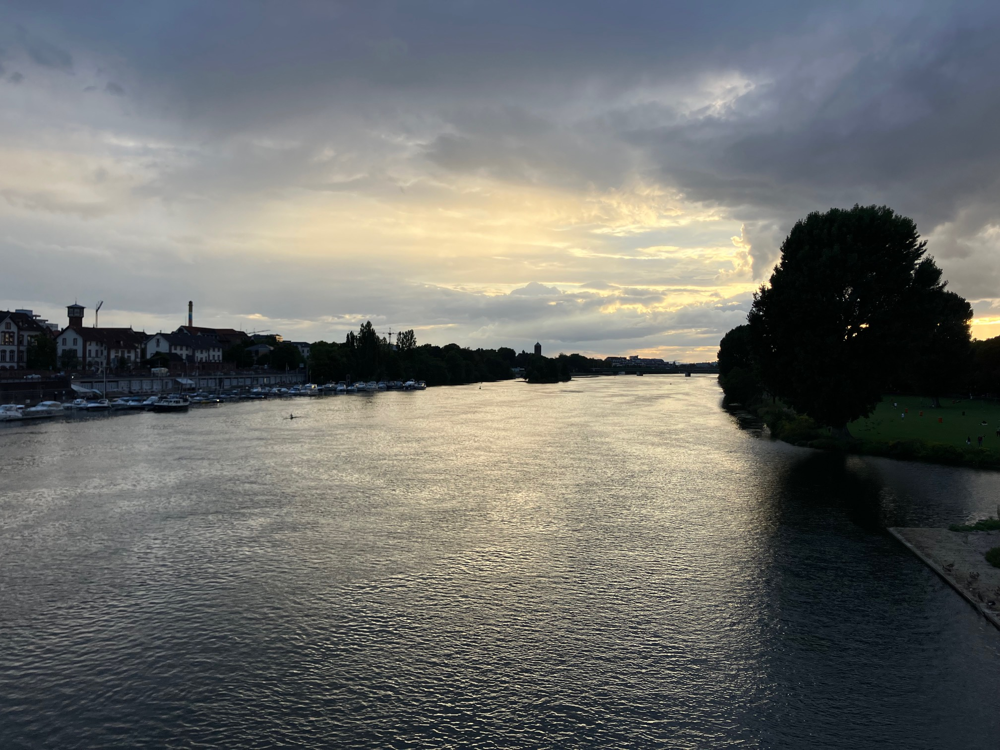

Daily Stats*
| Distance |
62.99 km |
| Time |
3:15:16 h |
| Avg. Speed |
19.4 km/h |
| Max. Speed |
33.7 km/h |
| Avg. Heart Rate |
122 bpm |
| Uphill |
391 m |
| Downhill |
482 m |
| Avg. Temperature** |
21.0 °C |

Elevation profile [m]

Slope profile [%]
*measured by Garmin Forerunner 945 & Sigma ROX 4.0
**measured at the lower back
Daybook
Now the time had come: the very last leg of this year's tour was just around the corner, and it would be a return to the place where it all started just under three weeks ago: my adopted home of Heidelberg. A relatively short route with not too many uphill climbs, which I had already cycled several times before. Therefore, I didn't expect any major difficulties during yesterday's ride, especially since the weather forecast was quite positive, with sunshine and clouds.
Well, first of all I must admit that my motivation level was pretty low already, since this was the eighth day of riding in a row (with some challenging legs) and my muscles felt extremely heavy. But I really wanted to reach the finishing line and complete the tour, as the journey's end with the arrival is one of the most emotional moments on such tours, in my experience! And so I set off from my mother's house in Roßdorf in the afternoon.
The first part of the route took me on a short climb along Roßdorf's main street towards Darmstadt. Shortly after passing the Bessunger Forsthaus, I entered the forest and headed towards the Fischerhütte. It's always nice to be out in the woods, but after the last few days I really hated the gravelly ground. At least it was only a few kilometers.
After around 30 minutes, I approached Seeheim-Jugenheim via Eberstadt and Malchen. Unfortunately, a thick gray cloud cover was already forming in the sky above Eberstadt, and I expected another rain shower. Indeed, the rain began to fall before I reached Seeheim-Jugenheim. First lightly, so I was able to carry on, but shortly afterwards it became worse, forcing me to take a break and seek shelter. With wet sports clothes already clinging to my body, I kept waiting for the first chance to get back on the road. Spotting blue skies on the horizon and reluctant to spend too much time trapped in the cold, I pedaled off again after only about five minutes, ignoring the weather.
The gamble paid off: when I arrived in Zwingenberg, the rain cleared up. Along the B3, I quickly traversed Bensheim, then Heppenheim, Laudenbach, and Hemsbach, until I finally arrived in Weinheim. This was a very flat part of the route, mainly composed of shorter town crossings and connecting country roads with bike paths in between. Somewhat surprisingly, my navigation device had decided yesterday that the route above the vineyards would be more scenic than the B3, so I found myself on a steep climb in the southern part of Weinheim. I found this a little traitorous of my device, but I've never backed down from a difficult route, so I just tolerated it.
On small uphill/downhill waves, I rode through the small towns before Heidelberg (Lützelsachsen, Hohensachsen, Grosssachsen, Leutershausen) until I passed Schriesheim and Dossenheim and entered the north of Heidelberg, Handschuhsheim. My mind was truly blank as I turned onto the Brückenstraße and crossed the Theodor-Heuss-Brücke, but right there I experienced the emotional moment of pride and fulfillment mentioned at the beginning, when the evening sun shone on the Neckar (see the impression) and the panorama I knew so well opened up on both sides: Heidelberg Castle, the Neckar meadows, the old bridge to the left, and so on. Just a few moments later, I finally arrived after cycling so many miles. In the evening, I “celebrated” the successful end of my tour with a well-deserved chicken breast salad and a few detox drinks :-)
This last leg was another bit of a struggle, and due to the weather and my mental focus on the route, I only took one photo (sorry about that). However, it definitely was “La Grande Finale,” and it was a worthy one!
Impressions

Neckar view from the Theodor Heuss Bridge in Heidelberg